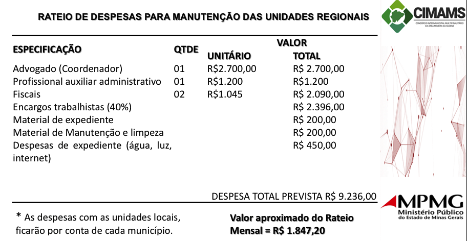

Processo de implantação e atualização da sala Mineira, PAV e PROCON
Materiais necessários, datas de implantações, serviços utlizados e mais informações sobre as implantações
Local de Atendimento
O local para atendimento deverá ser um espaço onde o contribuintes e empreendedores possam ser atendidos de maneira rápida, transparente de forma confortável.
Ferramentas necessárias
Para implantar a sala mineira do empreendedor em Lagoa dos Patos MG, PAV (Ponto de atendimento virtual) da receita federal, setor de tributos e INCRA, ou seja, 04 setores, onde no momento estão disponíveis 3 funcionários. Gleiton Aparecido Soares de souza (Setor fazendário/Tributos, Sala Mineira, PAV (Breve), PROCON (Se implementado)), Vander de Jesus Magalhães (Atendimentos Tributos/fazenda, PAV (breve), PROCON (Se implementado)), João Martins Guedes (INCRA, Setor fazendário/tributos, cadastros Rurais, cadastros urbanos) os materiais desejados para um pleno funcionamento seria:
01 - Local espaço para atendimento
03 - Computadores Completos (Monitor e gabinete) (Possuimos um computador (Necessita apenas de uma atualizão de Hardware (Acressentar SSD e um melhor processador (Minimo i5 4º geração)))).
02 - Mesas para computadores (possuimos 01 mesa em boas condições e uma mesa em ruins condições e umas das mesas é do setor de agricultura).
01 - Notebook (Utilizado para atendimentos rápidos e treinamentos disponibilizados pelo sebrae e seus parceiros, além de poder ser utilizado para palestras e apresentações de projetos).
01 - Telefone Smartphone configurações Minimas (2 Chips, 4GB Ram, 32GB armazenamento, snapdragon 600, camera 12mpx, etc) - O Telefone será utilizado para fotos de publicidades, atendimentos via aplicativos, atendimentos via chamadas, video chamadas, uma grande de possibilidade de marcação e levantamento de dados.
01 - Espaço (Link do site oficial se possível) para a sala mineira para divulgar os serviços prestados pela sala mineira do empreendedor de Lagoa dos Patos MG, ex: https://lagoadospatos.mg.gov.br/sala-mineira-do-empreendedor
01 - Longarina minimo 03 lugares para espera de atendiemento.
03 - Cadeiras de escritório giratórias.
06 - Cadeiras de escritório fixas (Para atendimento) 02 por mesas dos computadores.
01 - Arquivos de aço, minimo 04 gavetas para armazenar dados e protocolos de atendimentos (Temos um arquivo que terá que ser esvaziado, estou pensando em scanear todos os papeis lá disponíveis e depois despachar todos os itens para o arquivo municipal).
Caso implante o PROCON
Caso implemente o procon, terá uma mensalidade de acordo com a reunião.Aderindo será disponibilizando via convênio, sendo estes os itens para a estrururação da sala:
Quantidade
Equipamento recebido via convênio
01
Mesa para posto de atendimento
01
Cadeira giratória de escritório
02
Cadeiras
01
Longarina de 05 lugares
01
Computador de mesa
01
Impressora multifuncional
01
Armário duas portas
01
Telefone fixo
para a manutenção da unidade regional, será rateado entre os municípios.
Valor da mensalidade: cerca de R$ 2.200,00
segue exemplo proposto, acredito que não será esse valor realmente, está fora da realidade.
Clique na imagem para ver uma melhor qualidade

O que falta para implantar o PROCON
Assinar acordos técnicos, não me lembro bem qual os procedimentos, mas acredito que todos os municipios terão que aderir. E implantar a estrutura que será implantada.
O que falta para implantar o PAV
Localização da inauguração
Equipamento para atendimento, computadores, arquivos (Armazenar protocolos, cadastros e atendimentos).
Reinaugurar a sala Mineira do Empreendedor
Cadastro e emissão de certificado digital (02 certificados (Gleiton Soares e Vander Magalhães))
Terminar o curso de atendimento do PAV (Curso completo é extenso e demorado, pretendo fazer nesse periodo de feriado 07 de setembro.)
Parceiros
Prefeitura de Lagoa dos Patos MG
Plano de parceria com o SICOOB - Credinor Lagoa dos Patos MG;
Parcerias com os empreendedores do municipio;
Parceria com a camara de vereadores de Lagoa dos Patos MG;
Parceria com o Sebrae;
Parcerias com o Senac;
Parcerias com o Senar;
CIMAMS (PROCON se implementado)
Setores:
Sala Mineira do empreendedor:
A sala mineira do empreendedor de Lagoa dos Patos é um espaço para atendimento ao prestador de serviços e comerciante da cidade, esclarecendo dúvidas e servindo como ponte entre o SEBRAE e o orgão público.
PAV:
O PAV (Ponto de atendimento virtual), será um local junto a sala mineira do empreendedor onde disponibilizará serviços que até então eram prioritariamente feitos nas agências da receita federal.
Tributos Fazenda:
O setor de tributos e fazedário, fica encarregado da área urbana com serviços referentes a tributos municipais entre outros serviços da área de urbanização e fiscalização.
INCRA:
A parceria entre o Incra e municipios visa ampliar o processo de regularização dos imóveis rurais.
PROCON (Caso implementar):
O Departamento Estadual de Proteção e Defesa do Consumidor - PROCON - é um órgão do Poder Executivo, subordinado a estrutura programática da Secretaria de Estado da Justiça, Família e Trabalho. Se implantado funcionará juntamente a sala mineira do empreendedor de Lagoa dos Patos MG
Sala Mineira do Empreendedor
VEJA QUAIS SÃO UNS DOS SERVIÇOS QUE A SALA MINEIRA REALIZA:
ORIENTAÇÕES E INFORMAÇÕES
Orientação prévia sobre o processo de registro;
Orientação prévia sobre o processo de licenciamento Municipal;
Relação dos locais que realizam atendimento gratuito ao MEI;
Como se cadastrar como fornecedor da prefeitura;
Como participar de processos de aquisições públicas municipais em andamento;
Mapa de oportunidades para o empreendedor;
Distribuição de Materiais informativos;
SERVIÇOS
Responder a consultas de viabilidade;
Protocolar licenciamento municipal do MEI (microempreendedor individual), ME, EPP e demais empresas;
Emissão de Guias de Recolhimento das taxas municipais para processo de formalização;
Emissão de certificado de Condição de Microempreendedor individual (CCMEI);
Declaração Anual MEI
Cumprimento de prazo estabelecidos pela jucemg para emissão de alvará de localização e funcionamento no municipio;
Parcelamentos de Dividas MEI;
Emissão de Alvará de Localização e funcionamento para pessoa física, MEI, ME, EPP.
CAPACITAÇÕES
Programação regular de capacitações SEBRAE Minas;
Programa regular de capacitações do microempreendeor individual;
Capacitações via parceiros;
ATIVIDADES QUE PODEM SER SOMADAS COM UM ESPAÇO MAIS AMPLO:
Suporte e orientações pelos meios eletrônicos (Whatsapp e E-mail)
Formalização de Microempreendedores Individuais e Profissionais Autônomos e Liberais
Orientação a respeito da obtenção da Inscrição Municipal, alvará de localização e funcionamento e demais licenças municipais
Impressão das guias DAS (INSS)
Baixa do cadastro de Microempreendedor Individual
Orientação e envio da declaração de imposto de renda do MEI
Orientações sobre processos licitatórios
Impressão dos documentos necessários para participação em licitações
Orientações sobre emissão de nota fiscal
Informações e divulgação de cursos de capacitação disponíveis mediante parcerias ou diretamente pela Prefeitura de Itajubá
Informações sobre os benefícios previdenciários
Divulgação sobre licitações e oportunidades de empreendedorismo locais
Orientações sobre o SIMPLES NACIONAL
Atividades relacionadas ao MEI (Microempreendedor Individual)
Formalização como Microempreendedores Individuais e autônomos (liberais);
PAV (Ponto de atendimento virtual) da receita Federal
VEJA QUAIS SÃO OS SERVIÇOS DO PONTO DE ATENDIMENTO DA RECEITA FEDERAL:
CAEPF – Inscrição, Baixa, Cancelamento ou Alteração de Dados
CAFIR - Inscrição, alteração, cancelamento ou reativação.
CNO – Inscrição, Alteração ou Anulação por Multiplicidade (1)(2)
Consulta Pendência Fiscal PF, PJ, Imóvel Rural(1)
Consulta Pendência Malha Fiscal Pessoa Física (1)
Consulta Restituição e Situação DIRPF
Conversão de Processo Eletrônico para Digital (1) (2)
Cópia de Processo (2)
Cópia Declaração e Recibos para Pessoa Física – DIRPF, DIRF Beneficiário e DITR(1)
Cópia Declaração e Recibos – GFIP, Perdcomp, Dacon, Dmed
CPF - Comprovante de Inscrição, Inscrição, Alteração e Regularização
Emissão de Documento de Arrecadação – DARF e GPS (2)
Impugnação, Recurso, Manifestação de Inconformidade (2)
Juntada de Documentos(2)
Procuração RFB
Protocolo de Documentos (1)
Protocolo de Documentos – Certidão de Obra (1) (2)
Protocolo de Documentos – Certidão de Regularidade Fiscal (1) (2)
Protocolo de Documentos – CNPJ – Inscrição, Alteração e Baixa (1) (2)
Protocolo de Documentos – Retificação de Documentos de Arrecadação - REDARF/RETGPS (1) (2)
Fazenda Tributos
VEJA QUAIS SÃO OS SERVIÇOS REALIZADOS PELO SETOR FAZENDÁRIO DE LAGOA DOS PATOS MG
IPTU
Emissão de IPTU;
2° Via de IPTU;
Abatimento de divida ativa de acordo com a lei
IMÓVEIS
Cadastro de imóveis;
Alterar Imóveis;
Alteração de proprietário;
Medição de terreno;
Esclarecimento de dúvidas;
Criação de Números de identificação dos imóveis
ISSQN
Emissão de guia
Calculo de ISSQN
Esclarecimento de dúvidas do valor em relação ao serviço;
ITBI
Calculo de ITBI
Avaliação Venal Urbana
Avaliação Venal Rural
Emissão de guia compra e venda
Emissão de guia Sessão de direitos hereditários
Alvarás
Alvará de funcionamento
Alvará de construção imóvel
Emissão de Alvará tumulo do cemitério
Alimentação do Sistema SISOBRAS
Pedidos
Pedido de Ligação de Energia
Pedido de ligação de água
Pedido de licensas de funcionamento em vias públicas
Outras taxas
Taxa de lixo
Taxas de Expediente
COMPETENCIAS
Tem por finalidade planejar e coordenar a política fazendária municipal, estabelecendo programas, projetos e atividades relacionadas com as áreas financeira, contábil, fiscal e tributária, bem como desenvolver atividades relativas aos serviços de execução da dívida tributária e não tributárias.
Compete à Secretaria Municipal de Fazenda:
I – coordenar as atividades relativas a lançamento, arrecadação e fiscalização dos tributos mobiliários e imobiliários, mantendo atualizado o cadastro respectivo;
II – coordenar e fiscalizar a cobrança dos créditos tributários e fiscais do Município e subsidiar a Procuradoria da Fazenda Municipal na execução judicial da dívida ativa;
III – coordenar a organização da legislação tributária municipal, orientando os contribuintes sobre sua correta aplicação;
IV – coordenar e executar a contabilização financeira, patrimonial e orçamentária do Município, nos termos da legislação em vigor;
V – coordenar e proceder o recebimento das rendas municipais, efetuar pagamentos dos compromissos do Município e registrar e monitorar as operações relativas a financiamentos e repasses e coordenar o serviço da dívida;
VI – atuar, conjuntamente com as Secretarias Municipais de Administração e de Planejamento e Coordenação Geral, na definição de políticas de remuneração de servidores da Administração Direta e Indireta do Poder Executivo;
VII – coordenar a execução das atividades administrativas e financeiras da Secretaria;
VIII – assegurar inspeção de atos e procedimentos como medida preliminar ao cumprimento das obrigações pecuniárias;
IX – coordenar outras atividades destinadas à consecução de seus objetivos.
Incra
VEJA QUAIS SÃO OS SERVIÇOS REALIZADOS PELO SETOR FAZENDÁRIO DE LAGOA DOS PATOS MG
Carta de Serviços
Mais informações sobre todos os serviços oferecidos por este órgão podem ser encontrados também em formato PDF.
Atualizar cadastro de beneficiário assentado
Reforma Agrária
Atualizar cadastro de imóvel rural
Imóveis
Cadastrar imóvel rural
Imóveis
Certificar imóvel rural
Imóveis
Confirmar autenticidade do CCIR
Imóveis
Consultar Código do Imóvel Rural
Imóveis
Consultar Relação de Beneficiários Assentados
Reforma Agrária
Corrigir dados coletados no georreferenciamento de área rural
Imóveis Emitir CCIR
Imóveis
Emitir Certidão de Assentado
Reforma Agrária
Emitir Contrato de Concessão de Uso
Reforma Agrária
Emitir Espelho de Beneficiário Assentado
Reforma Agrária
Liberar Cláusula do Título do Assentamento
Reforma Agrária
Meios de pagamento de serviços públicos
Obter autorização para estrangeiro adquirir ou arrendar terras
Imóveis
Obter coordenadas e arquivos dos imóveis rurais certificados
Imóveis
Obter descaracterização de imóvel rural
Imóveis
Pagar Crédito Instalação
Reforma Agrária
Pagar Título de Assentamento
Reforma Agrária
Pagar Título de Regularização Fundiária
Imóveis
Regularizar cadastro bloqueado de assentado
Reforma Agrária
Regularizar ocupação em área rural da União
Imóveis
Solicitar comprovante de atividade rural
Imóveis
Solicitar Crédito Instalação
Reforma Agrária
Solicitar Declaração de Aptidão ao Pronaf (DAP)
Reforma Agrária
Solicitar recibo do CAR do assentamento
Reforma Agrária
Vincular ou desvincular código do imóvel rural
Imóveis
PROCON
VEJA QUAIS SÃO OS SERVIÇOS REALIZADOS PELO PROCON AO SE IMPLANTADO
O instituto presta atendimento pessoal a todo consumidor que encontre problemas ou dúvidas no mercado de consumo, dentre a lista abaixo especificada:
Compra de produtos (por pessoa física)*.
Contratação de serviços (por pessoa física)*.
Serviços oferecidos por instituições financeiras.
Serviços oferecidos por operadoras de plano de saúde e administradoras de benefícios.
Relação entre entidade de previdência privada (aberta) e seus participantes.
Relação entre bancos de sangue e doador.
Relação entre agente financeiro do Sistema de Habitação (SFH) e mutuário.
*Em caso de pessoa jurídica, deverá demonstrar que é consumidora final daquele produto ou serviço.
Todos os serviços do Procon são gratuitos.
Objetivos do Procon para nossa região (Assim como descrito na apresentação que aconteceu dia 12 de agosto de 2021, na camara Municipal de Coração de Jesus MG)
Fortalecimento dos comércios local e regional;
Ampliação do acesso dos consumidores ao PROCON
Aumento da capacidade interventiva do PROCON
Implementação do PROCON móvel
Segurança das relações consumeristas
Programa de Educação ao Consumidor nas Escolas
Promoção de educação para o consumo no Norte de Minas
Promover, por meio da gestão consorciada entre os municípios, qualidade e continuidade das Unidades de PROCON Regionais e Locais
Confira os modelos de Salas mineiras do empreendedor
Os exemplos descritos e citados aqui, mostram a simplicidade ao mesmo tempo que demostre conforto e segurança para o empreendedor. Todas as imagens tem a descrição de onde elas são. Lembrando que esse são espaços dedicados somente a sala mineira do empreendedor, diferente da proposta aqui descrita.
Para acessar a matéria original de cada imagem, utilize esse plano pela internet, basta acessar o link da primeira página ou apontar a camera para o QRCode.